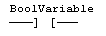
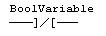
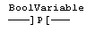
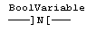

Contacts are basic graphic elements of the LD language. A contact is associated to a boolean variable written upon its graphic symbol. A contact sets the state of the rung on its right side, according to the value of the associated variable and the rung state on its left side.
Below are the possible contact symbols and how they change the rung state:
|
Symbol |
Action |
Description |
|
 |
Normal |
The rung state on the right is the boolean AND between the rung state on the left and the associated variable. |
|
 |
Negated |
The rung state on the right is the boolean AND between the rung state on the left and the negation of the associated variable. |
|
 |
Positive pulse |
The rung state on the right is TRUE only when the rung state on the left is TRUE and the associated variable changes from FALSE to TRUE (rising edge). |
|
 |
Negative pulse |
The rung state on the right is TRUE only when the rung state on the left is TRUE and the associated variable changes from TRUE to FALSE (falling edge). |
When a contact or a coil is selected, You can press the SPACE bar to change its type (normal, negated, pulse...).
Two serial normal contacts represent an
AND
operation.
Two contacts in parallel represent an
OR
operation.